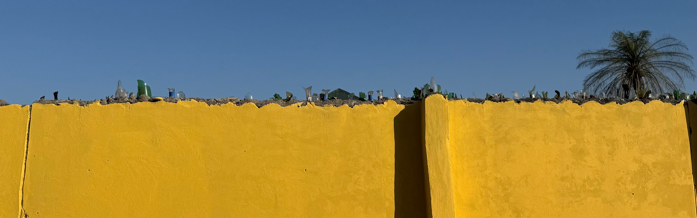
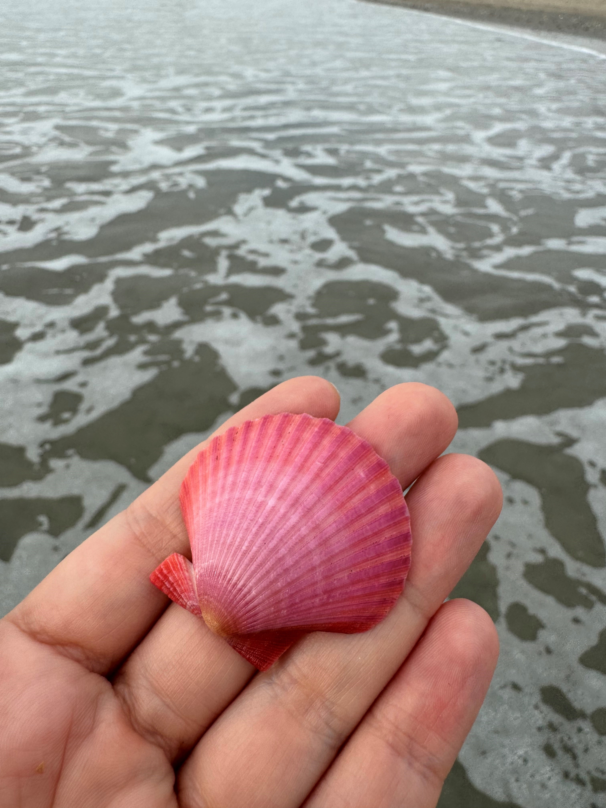
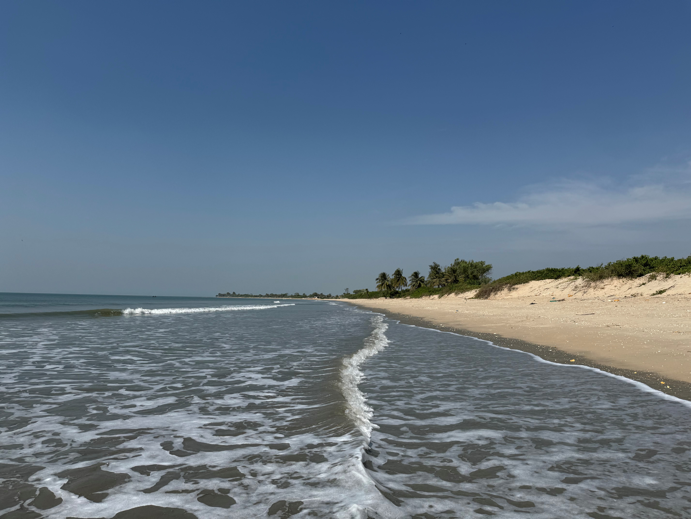

Entdecke Gambia – Das lächelnde Küstenland Afrikas

Gambia, das kleinste Land auf dem afrikanischen Festland, bietet eine faszinierende Mischung aus Natur, Kultur und Gastfreundschaft. Hier sind einige Highlights, die du als Tourist erleben kannst:
- Traumhafte Strände: Entspanne an der Atlantikküste oder genieße Wassersport.
- Bootstouren auf dem Gambia-Fluss: Erkunde Mangrovenwälder und exotische Tierwelt.
- Abuko Nature Reserve: Ein Paradies für Naturfreunde und Vogelbeobachter.
- Kulturelle Märkte: Besuche Banjul und Serrekunda für Handwerkskunst und lokale Küche.
- Authentische Kultur: Erlebe Musik, Tanz und die berühmte Freundlichkeit der Menschen.

